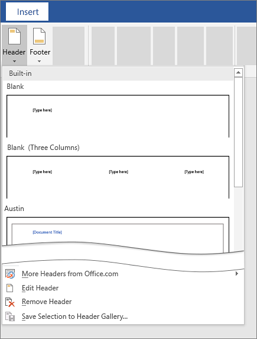
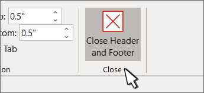

Go to Insert > Header or Footer.
Choose the header style you want to use.

Add or change text for the header or footer. For more info on things you can do with headers, see Edit your existing headers and footers.
Select Close Header and Footer or press Esc to exit.
